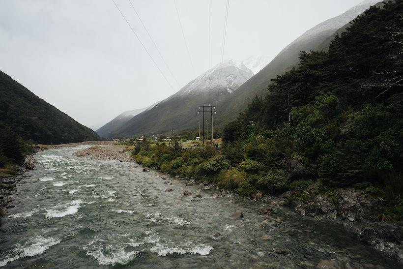
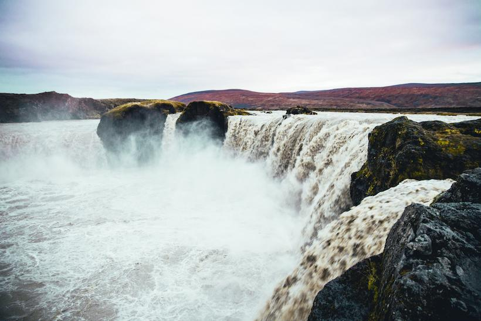
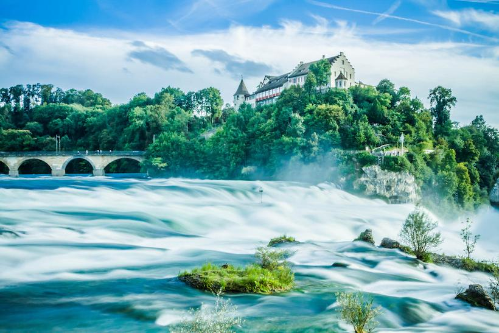
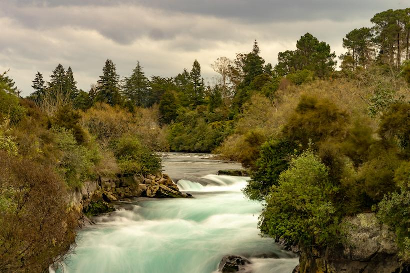
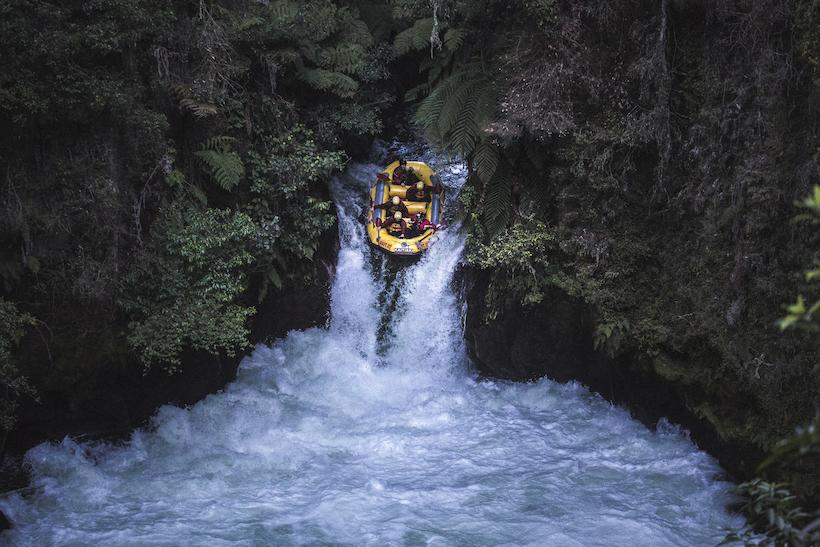

At River Riders, we believe that rapids were meant to be ridden. We make sure that our customers have training before the rapids are reached. Our goals are safety and above all - fun!


At River Riders, we believe that rapids were meant to be ridden. We make sure that our customers have training before the rapids are reached. Our goals are safety and above all - fun!
River Riders got started by Scott Christopher Severn in 2000 after a thrilling experience on the river with a group of friends. He loved it and decided that he wanted to do something like that for a career. The result: a white water rafting company that operates on several rivers with some fun rapids.(Note: This is a project for school. This company doesn't exist.)




